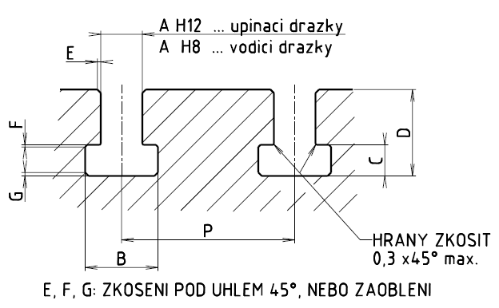

Obrobené upínací drážky T

Rozměry obrobených upínacích drážek T
Rozměry v milimetrech
| Rozměry drážky |
Rozteč drážek P |
Šroub |
| A |
B |
C |
D |
E |
F |
G |
d |
s2 |
k2 |
|
min. |
max. |
min. |
max. |
min. |
max. |
max. |
max. |
max. |
| 5 |
10 |
11 |
3,5 |
4,5 |
8 |
10 |
1 |
0,6 |
1 |
20-25-32 |
M4 |
9 |
3 |
| 6 |
11 |
12,5 |
5 |
6 |
11 |
13 |
1 |
0,6 |
1 |
25-32-40 |
M5 |
10 |
4 |
| 8 |
14,5 |
16 |
7 |
8 |
15 |
18 |
1 |
0,6 |
1 |
32-40-50 |
M6 |
13 |
6 |
| 10 |
16 |
18 |
7 |
8 |
17 |
21 |
1 |
0,6 |
1 |
40-50-63 |
M8 |
15 |
6 |
| 12 |
19 |
21 |
8 |
9 |
20 |
25 |
1 |
0,6 |
1 |
(40)-50-63-80 |
M10 |
17 |
7 |
| 14 |
23 |
25 |
9 |
11 |
23 |
28 |
1,6 |
0,6 |
1,6 |
(50)-63-80-100 |
M12 |
22 |
8 |
| 18 |
30 |
32 |
12 |
14 |
30 |
36 |
1,6 |
1 |
1,6 |
(63)-80-100-125 |
M16 |
28 |
10 |
| 22 |
37 |
40 |
16 |
18 |
38 |
45 |
1,6 |
1 |
2,5 |
(80)-100-125-160 |
M20 |
34 |
14 |
| 28 |
46 |
50 |
20 |
22 |
48 |
56 |
1,6 |
1 |
2,5 |
100-125-160-200 |
M24 |
43 |
18 |
| 36 |
56 |
60 |
25 |
28 |
61 |
71 |
2,5 |
1 |
2,5 |
125-160-200-250 |
M30 |
53 |
23 |
| 42 |
68 |
72 |
32 |
35 |
74 |
85 |
2,5 |
1,6 |
4 |
160-200-250-320 |
M36 |
64 |
28 |
| 48 |
80 |
85 |
36 |
40 |
84 |
95 |
2,5 |
2 |
6 |
200-250-320-400 |
M42 |
75 |
32 |
| 54 |
90 |
95 |
40 |
44 |
94 |
106 |
2,5 |
2 |
6 |
250-320-400-500 |
M48 |
85 |
36 |
- V odůvodněných případech je možno použít jiné rozteče P, než udává tabulka, z řady R10 (R20).
- Mezní úchylky roztečí drážek jsou uvedeny v následující tabulce.
| Rozteč P |
Úchylky |
| 20 a 25 |
±0,2 |
| 32 až 100 |
±0,3 |
| 125 až 250 |
±0,5 |
| 320 až 500 |
±0,8 |